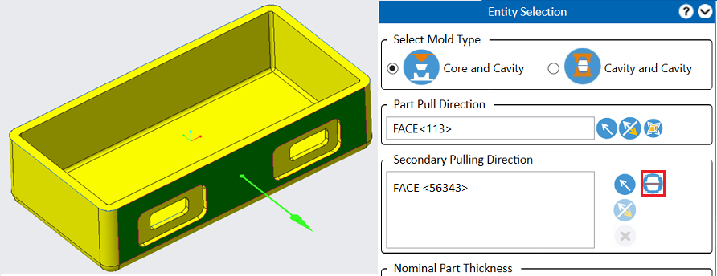
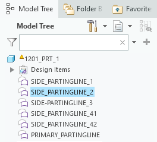
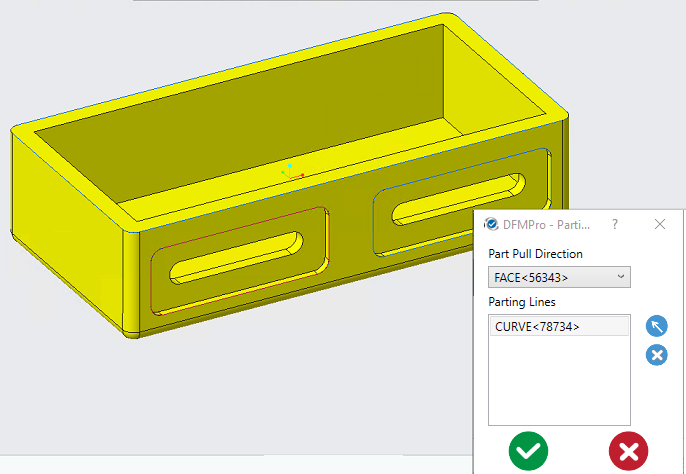
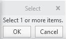
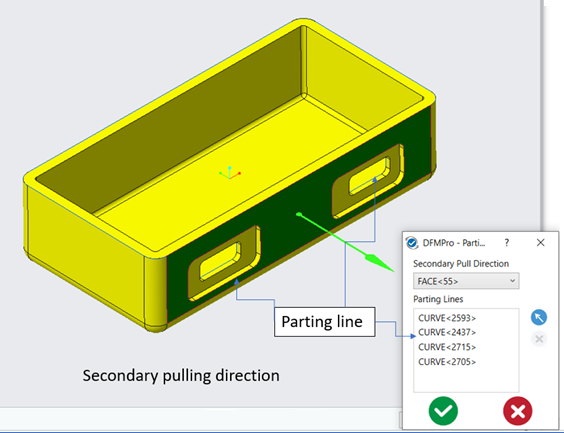
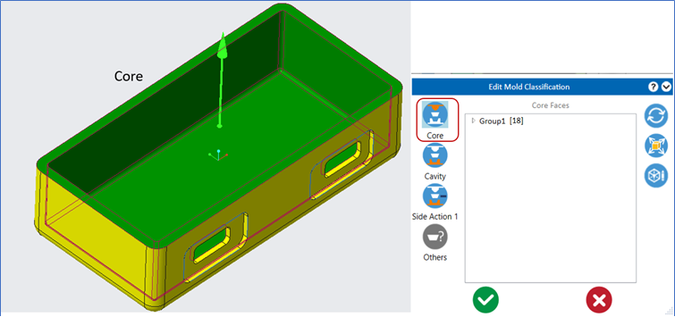
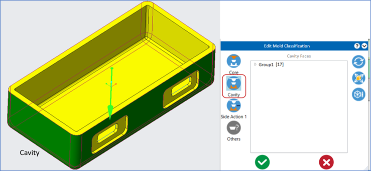
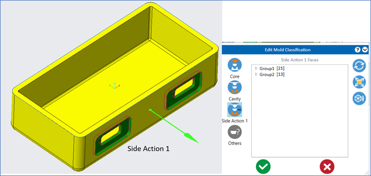

ユーザーは、射出成形、鋳造、ダイカストに対して、CAD モデルツリー内に用意された事前定義済みのパーティングライン（閉ループのパーティングカーブ）を選択できます。
Select parting line for secondary pulling direction ボタンをクリックします。

定義された副引き抜き方向は［Part Pull Direction］ドロップダウンリストに表示され、ユーザーは各引き抜き方向ごとにパーティングラインを選択できます。
Select Entity ボタンをクリックし、CAD モデルツリーから必要なパーティングラインを選択します。


ユーザーは Select Entity ボタンを使用して、1 つの引き抜き方向に対して CAD モデルツリーから 1 本または複数のパーティングラインを選択できます。選択後、OK ボタンをクリックします。

注記:
すでに選択されているパーティングラインは、他の引き抜き方向には選択できません。この場合、DFMPro はエラーメッセージを表示します。
選択可能なのは閉ループのパーティングラインのみです。
選択されたパーティングラインが開ループの場合、DFMPro はポップアップエラーメッセージを表示します。
「閉ループのパーティングライン曲線のみがサポートされています。現在の選択には一部の開ループ曲線が含まれているため、これらは破棄されました。」
パーツの引き抜き方向および対応するパーティングラインに基づいて、DFMPro は金型面を分類します。
選択されたパーツ引き抜き方向および対応するパーティングラインの詳細は、DFMPro の結果ファイル（*.dfmr）に保存され、インポート後に自動的に利用可能となります。

すべての上側の面はコアとして分類されます。

下側の面はキャビティとして分類されます。

副パーティングラインで囲まれた面は、サイドアクション 1 として分類されます。
